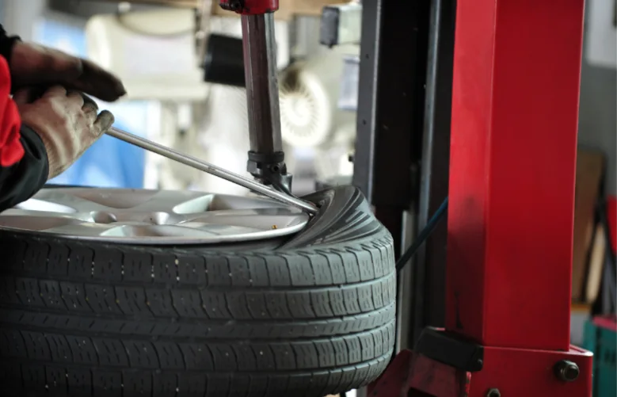
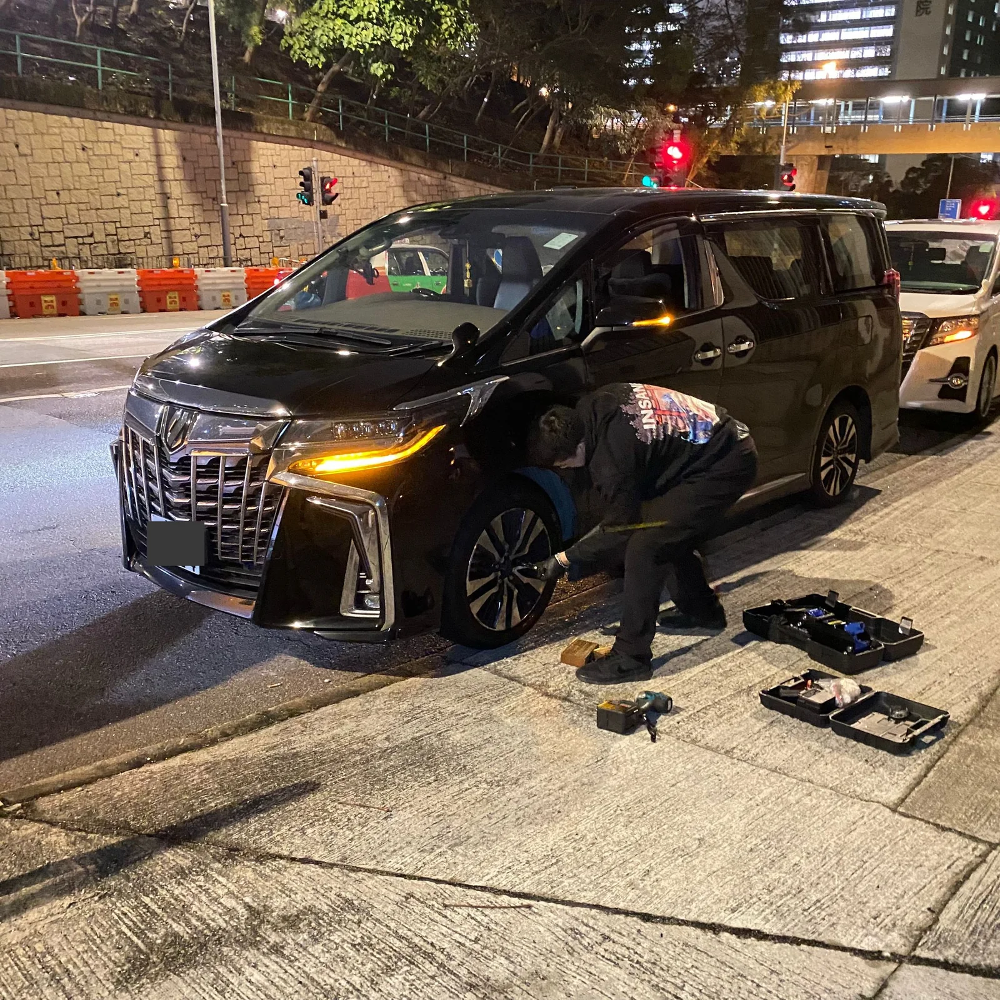
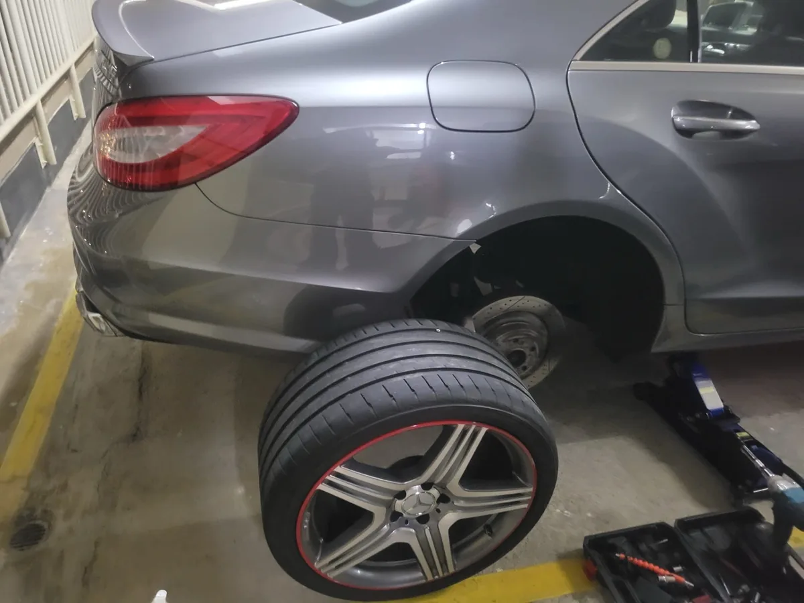
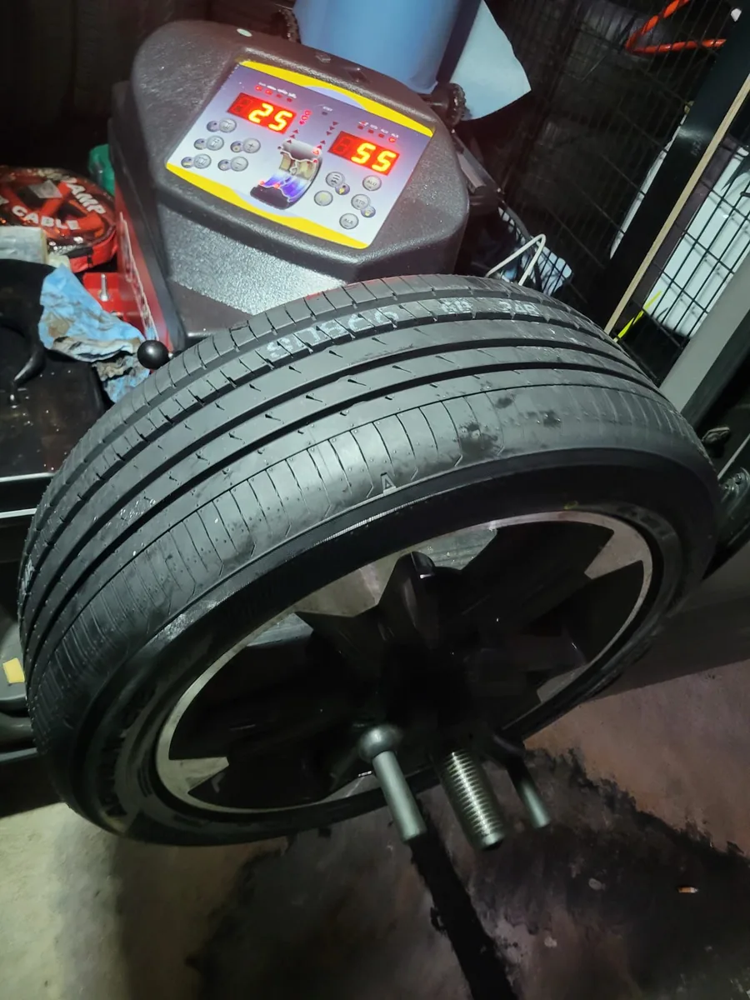

全港 24/7 緊急道路支援
24小時 - 緊急救車
補呔換呔
現場快速裝拆輪胎，無需拖車。流動車配備拆呔機及平衡機，補呔、換呔、搭電及電池更換，直接到場處理。
- 24/7全年無休
- 10+最快分鐘到場
- 即場裝拆及平衡
- 安心價格透明

服務範圍香港・九龍・新界
現場處理無需拖車
團隊正在候命，可即時聯絡
01 價格透明
02 專業設備
03 快速到場
04 即場完成
-
01
WhatsApp 聯絡
提供車款、所在位置，同故障或輪胎相片。
-
02
確認報價及時間
出發前講清方案、預計到場時間同收費。
-
03
即場完成處理
專業設備現場施工，完成後再檢查行車狀態。
真實服務實例
唔止到場，
係幫你重新上路。
深夜、停車場、公路或住宅附近，團隊按現場環境安排合適工具，盡量即場完成。
24小時
全天候支援
全天候支援


全港隨叫隨到
補呔一次幾錢？
價錢會按輪胎損壞位置、尺寸、施工地點及時間而定。建議 WhatsApp 傳送輪胎相片及位置，團隊會先提供清晰報價。
幾時需要直接換呔？
如果損壞位於胎側、破口太大、胎紋不足，或輪胎已老化，安全起見通常需要更換；技術人員會先按現場情況檢查。
全港都可以上門嗎？
服務覆蓋香港、九龍及新界；實際到場時間會受所在地點、路況及當時服務需求影響。
24 小時接聽